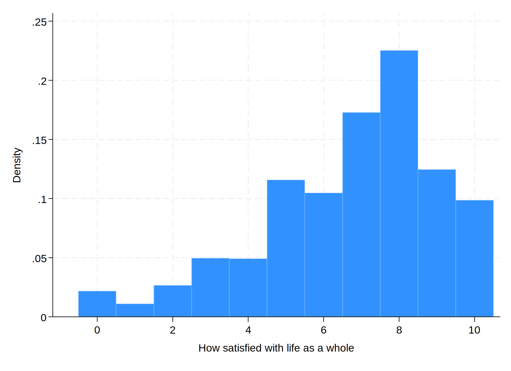
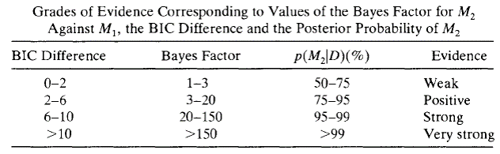
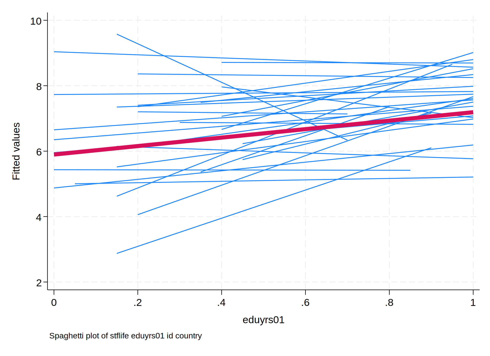
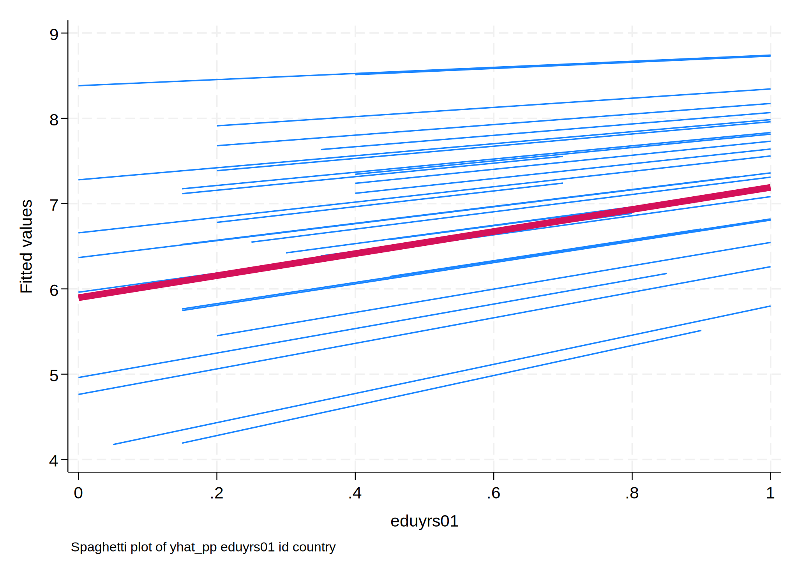
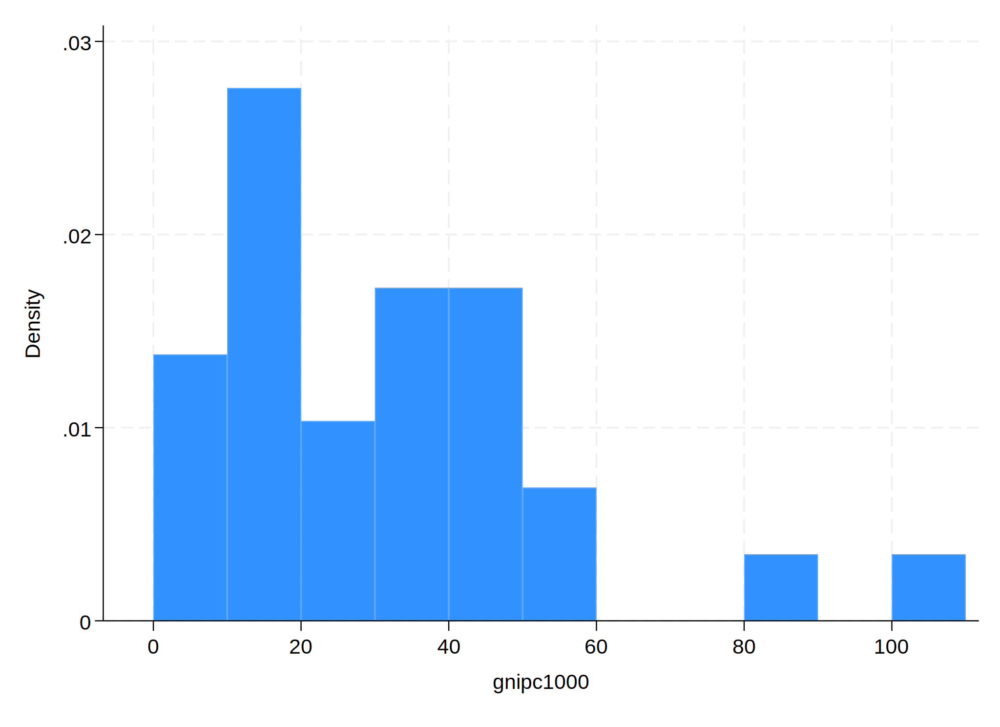
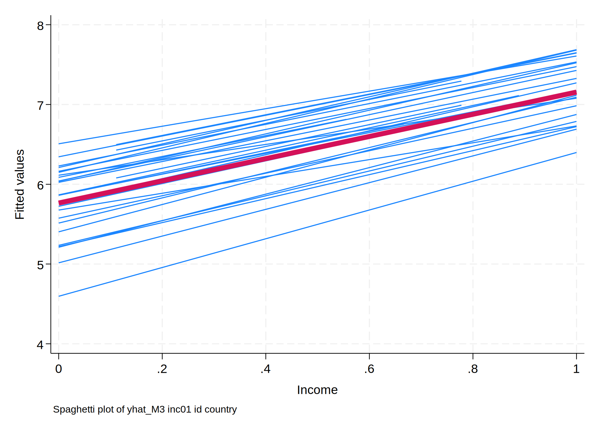
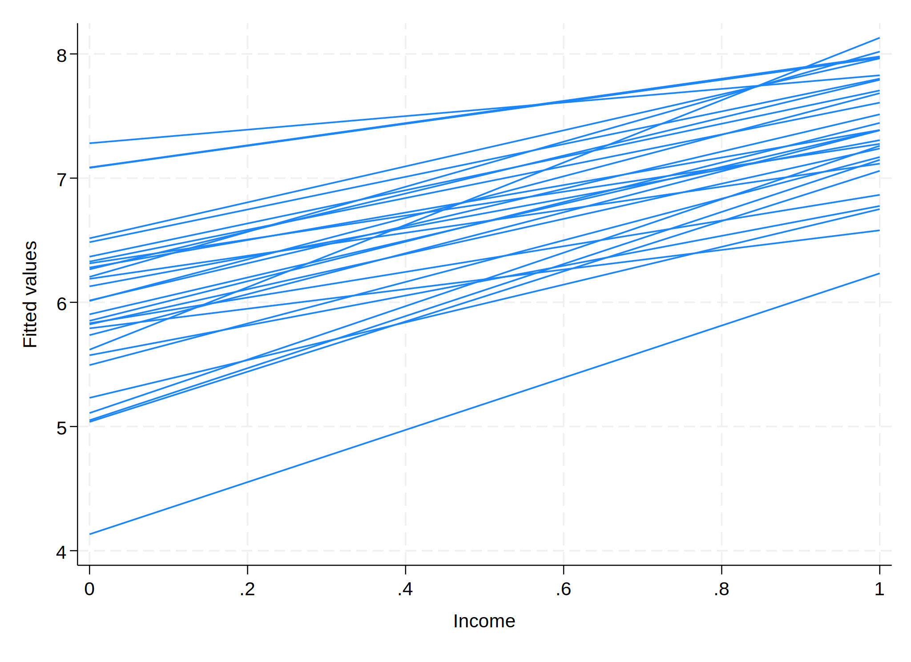

What is the variance of the following “dataset”?: 1, 2, 3, 4, 5
Because 3 is the mean, we take the square of the difference between each element and 3, then add them up, then multiply by \(\frac{1}{4}\). So the answer is \((-2^2 + -1^2 + 0^2 + 1^2 + 2^2) \times \frac{1}{4} = 2.5.\)
Quantifying the mystery
The most important part of variance is the part on the right: \(\sum(y_i - \bar{y})^2\). This is the sum of squared deviations between each observation of \(Y\) and the mean of \(Y\). You probably know that already. But think about it: this number quantifies the mystery we’re trying to solve. The bigger it is, the more uncertain we are about the location of any individual observation.
In “normal” (i.e., single-level) data, our tools for reducing variance (i.e., making observations more “predictable”) involve making \(Y\) a function of other variables in a linear regression. As we add predictors, we get a residual variance that is smaller than the original variance.
The variance here is the total amount of variance.
Decomposing variance
// the oneway (ANOVA) command is a handy calculator of squared deviationsoneway hours school_id
Analysis of variance
Source SS df MS F Prob > F
------------------------------------------------------------------------
Between groups 947.102456 29 32.6587054 7.50 0.0000
Within groups 3788.40982 870 4.35449405
------------------------------------------------------------------------
Total 4735.51228 899 5.26753313
Bartlett's equal-variances test: chi2(29) = 0.0000 Prob>chi2 = 1.000
// we use items from the oneway return list to calculate the ICC/VPCdi`r(mss)' / (`r(mss)' + `r(rss)')
.2
About 20% of the variance is at the school level.
Making predictions about new units
Assume two “new” schools with little data
School 31: 2 students; 2 and 4 hours
School 32: 2 students; 14 and 16 hours
What’s the right way to make good inferences about these schools?
Three approaches
No pooling
Partial pooling
Complete pooling
No pooling
If we decide to estimate, say, school 32’s average without pooling, that means that we cannot consider any other information except data from school 32. That’s what no pooling means – we are not allowed to use information from any other cluster to make inferences about this cluster. So even if we might be skeptical about making inferences from just two data points, our best guess of the school average would be 15 hours \(((14+16) / 2 = 15)\)).
Partial pooling and shrinkage
We combine cluster-specific data (e.g., new schools’ means of 3 and 15) with data about the distribution of clusters (e.g., the distribution of schools’ means has a mean of 9.00 and a SD of 1.09).
This is sometimes called an “empirical Bayes” estimate.
We combine the entire distribution (the “prior”) with the specific data from one cluster to create a “posterior” estimate of that cluster’s “true” mean.
This “shrinks” the simple value toward the mean of all clusters.
Formulas
\(\hat{\mu}_j^{PP}\) is the “partial pooling” estimate of the mean of cluster \(j\).
\(\hat{\mu}_j^{ML}\) is the “maximum likelihood” estimate of the mean for cluster \(j\). This is just the ordinary average.
\(\bar{\mu}\) is the mean of means for all the clusters (here 9 hours).
\(\tau^2\) is the between-group variance.
\(\sigma^2\) is the within-group variance (total variance \(-\)\(\tau^2\)).
\(n_j\) is the number of respondents (i.e., data points) in cluster \(j\).
\(\hat{R}_j\) is the “shrinkage factor” for cluster \(j\); that is, how much we “shrink” the extremity of the cluster’s maximum likelihood estimate. It will always be somewhere between 0 and 1.
Our best guess of the mean study time per week in school 32 is not 15 hours, but a bit over 11 hours.
Why? If our 32 schools are a sample then we can use the distribution of school means to assess the plausibility of any particular school-specific estimate.
School 32’s mean is way outside the norm for that population and is based on a tiny amount of data. So we’re better off not taking its average “too literally.”
Two students report such high numbers (14 and 16 hours) suggests that the school is likely above average; but it’s not enough data to fully overcome the “prior” distribution of school means.
What would affect the shrinkage factor?
As \(n_j \rightarrow \infty\), \(R \rightarrow 1\)
The more data we have on a cluster, the more we can rely on its data alone to provide an accurate estimate.
As \(ICC \rightarrow 1\), \(R \rightarrow 1\)
The more homogeneous the clusters, the less data we need from each cluster to get an accurate estimate of its central tendency.
Shrinkage applies to all clusters
The number we got for school 32 is close but not exactly the number we would get from doing this with the computer.
This is because the between-group variance gets calculated with shrinkage for every school simultaneously, not just for a single “new” cluster.
There are 30 students each in schools 1 through 30. This is a decent sample size per school, but we might not take deviations from the mean literally because smaller samples will likely have greater variance by chance alone.
More intuition
Partial pooling might seem strange, but we do it all the time. Consider baseball. If a player you’ve never seen before gets a hit on his first at bat, what’s your best estimate of his lifetime batting average? It’s not 100%! This is because you naturally combine data about the population of professional baseball players with the new data from this player.
It’s the same idea if you see someone run a red light in their car. You probably won’t infer that this person always runs red lights because you unconsciously combine that one data point with your knowledge of the population of drivers. You might think a person who runs a red light is a bit riskier of a driver than average, but it would take more data to be sure the person qualifies as a truly “reckless driver.”
This caveat is not at all important for understanding the gist of how shrinkage is done, but it will affect the exact calculations.
Partial pooling is the foundation of MLMs
It may not be obvious quite yet, but partial pooling is what makes models into multilevel models. Sometimes models that incorporate at least some shrinkage are called “random effects” or “mixed” models. We’ll go over what all that means soon. For now, it will be helpful if you spend the time you need to get the gist of what’s happening in one dimension. That will make later sections easier to grasp.
Complete pooling
Complete pooling assumes that there are no real differences in means between clusters. In practice, this means ignoring the multilevel structure of the data and acting as if we have “pooled” one-level data. This gets more interesting (and useful) when we’re dealing with multivariate data rather than with a single variable.
Even though it’s not very useful yet, we can still use the one-variable case to build intuition. What does complete pooling imply about groups? Consider the students in schools example. If we assume that there are no systematic differences between schools, then every school (given a big enough sample size) would converge to the same mean. This means that if we wanted to make a prediction about a new school, our best bet is just to select the mean of all individuals in the sample. This means that our best guess of the “true” mean of all the schools would be 9.0. Given the way we constructed the data, this is clearly not true!
No pooling
\(y_{ij} = \mu + \alpha_{j} + \epsilon_{ij}\), where \(\mu\) is the mean of the reference category and \(\alpha_j\) is a set of \(J-1\) fixed dummy variables.
\(\epsilon_{ij} \sim N(0,\sigma^2)\)
Partial pooling
\(y_{ij} = \mu + \alpha_{j} + \epsilon_{ij}\)
\(\alpha_j \sim N(0,\tau^2)\), where \(\mu\) is the average cluster mean
\(\epsilon_{ij} \sim N(0,\sigma^2)\)
Complete pooling
\(y_{ij} = \mu + \alpha_{j} + \epsilon_{ij}\)
\(\alpha_j \sim N(0,0) \qquad\) [assumes \(\alpha_j\) does not vary]
\(\epsilon_{ij} \sim N(0,\sigma^2)\)
“Random” and “fixed” effects
Although this terminology can be confusing, we generally speak of random effects when estimates combine within- and between-cluster variance (partial pooling) and fixed effects when estimates use only within-cluster data (no pooling).
We will talk more about this later on when we start building multivariate models, but this is a big part of the difference.
In general, I strongly prefer the language of pooling because it is much clearer.
No pooling
regress hours i.school_id
Because we are not combining information across levels, we can simply use regress here with dummies for schools.
Partial pooling
mixed hours || school_id:
We will use mixed to estimate models with partial pooling.
Complete pooling
regress hours
Because complete pooling assumes no variance by cluster, we can just use regress to estimate the overall sample mean and variance.
Outcome: All things considered, how satisfied are you with your life as a whole nowadays? Please answer using this card, where 0 means extremely dissatisfied and 10 means extremely satisfied.
usedata/ess5000_imp.dta, cleardrop country // drop numericencode cntry, gen(country) // numeric with labelssnapshot erase _all// just in casesnapshot save// for easy recall of original data
snapshot 1 created at 18 May 2023 21:59
Countries and sample sizes
Country | Freq. Percent Cum.
------------+-----------------------------------
AL | 19 0.38 0.38
BE | 112 2.24 2.62
BG | 69 1.38 4.00
CH | 68 1.36 5.36
CY | 6 0.12 5.48
CZ | 80 1.60 7.08
DE | 675 13.50 20.58
DK | 54 1.08 21.66
EE | 8 0.16 21.82
ES | 389 7.78 29.60
FI | 47 0.94 30.54
FR | 509 10.18 40.72
GB | 466 9.32 50.04
HU | 86 1.72 51.76
IE | 38 0.76 52.52
IL | 41 0.82 53.34
IS | 5 0.10 53.44
IT | 396 7.92 61.36
LT | 23 0.46 61.82
NL | 180 3.60 65.42
NO | 44 0.88 66.30
PL | 334 6.68 72.98
PT | 72 1.44 74.42
RU | 794 15.88 90.30
SE | 83 1.66 91.96
SI | 22 0.44 92.40
SK | 40 0.80 93.20
UA | 332 6.64 99.84
XK | 8 0.16 100.00
------------+-----------------------------------
Total | 5,000 100.00
Distribution of the outcome
Code
hist stflife, d
(start=0, width=1)

Mean and variance of stflife
How satisfied with life as a whole
-------------------------------------------------------------
Percentiles Smallest
1% 0 0
5% 2 0
10% 3 0 Obs 5,000
25% 5 0 Sum of wgt. 5,000
50% 7 Mean 6.7362
Largest Std. dev. 2.340108
75% 8 10
90% 9 10 Variance 5.476105
95% 10 10 Skewness -.8178173
99% 10 10 Kurtosis 3.293413
Where is the variance?
The previous slide showed the total variance (5.5) in life satisfaction.
We can’t tell from that alone how much of the variance is within- vs. between-countries.
Imagine the two extreme alternatives. What would all within variance mean? What would all between variance mean?
Quantifying variability with the ICC
Code
qui mixed stflife || country: // null or "empty" modelestat icc // ask for ICC (VPC)
country | .1624107 .0392475 .0992241 .2544679
------------------------------------------------------------------------------
About 16% of the variance in life satisfaction in Europe is between countries. The rest of the variance is within countries.
NP and PP mean estimates
Code
quietly{predict pp_mean, fitted// partially pooled predictionsreg stflife i.country // simple means by cluster ("no pooling")predict np_mean // get predictionscontract country pp_mean np_mean // collapse so there are 29 rows }list, cleannoobs
country pp_mean np_mean _freq
AL 5.757976 5.421052 19
BE 7.75963 7.794643 112
BG 5.044643 4.898551 69
CH 8.585573 8.705882 68
CY 7.089281 7.166667 6
CZ 6.389319 6.35 80
DE 7.599855 7.604445 675
DK 8.588921 8.740741 54
EE 6.69569 6.5 8
ES 6.969545 6.969151 389
FI 7.92022 8.021276 47
FR 6.350386 6.343812 509
GB 7.258929 7.261803 466
HU 6.067502 6.011628 86
IE 6.860884 6.842105 38
IL 7.454883 7.512195 41
IS 7.393426 7.8 5
IT 6.665956 6.661616 396
LT 7.035377 7.043478 23
NL 7.718287 7.738889 180
NO 8.159466 8.295455 44
PL 6.955761 6.95509 334
PT 6.092711 6.027778 72
RU 5.756185 5.748111 794
SE 7.850708 7.903615 83
SI 7.552197 7.681818 22
SK 6.867045 6.85 40
UA 5.158118 5.129518 332
XK 7.379725 7.625 8
quietly{ snapshot restore 1 // ensure original dataqui mixed stflife || country: // null model (partially pooled means)bysort country: gen first = _n// create unique index in each countrypredict rand_int, reffects// get PP mean estimates for each countrypredict rand_int_se, reses // get standard errors of mean estimateskeepif first == 1 // keep only one copy of each countrygen int_high = rand_int + 1.96*rand_int_se // upper bound of estimategen int_low = rand_int - 1.96*rand_int_se // lower bound of estimatesort rand_int // sort lowest to highestgenrank = _n// create sort order variable for plottwoway rcap int_low int_high rank || /// // rcap is confidence bounds sorted by rankscatter rand_int rank, mlabel(country) mlabpos(12) legend(off) /// // scatter gives pointsxlabel(none) xtitle("") ytitle("PP estimate of intercept") snapshot restore 1 // restore original data for later}
What about complete pooling?
summarize stflife
Variable | Obs Mean Std. dev. Min Max
-------------+---------------------------------------------------------
stflife | 5,000 6.7362 2.340108 0 10
Complete pooling assumes every country has the same population mean and that apparent differences (in the sample) only arise from sampling error.
Choosing the “right” model
qui eststo NPM: reg stflife i.country // take with a grain of saltqui eststo PPM: mixed stflife || country:qui eststo CPM: reg stflifeestimatesstats NPM PPM CPM
Akaike's information criterion and Bayesian information criterion
-----------------------------------------------------------------------------
Model | N ll(null) ll(model) df AIC BIC
-------------+---------------------------------------------------------------
NPM | 5,000 -11345.18 -10961.74 29 21981.47 22170.47
PPM | 5,000 . -11016.19 3 22038.38 22057.93
CPM | 5,000 -11345.18 -11345.18 1 22692.36 22698.87
-----------------------------------------------------------------------------
Note: BIC uses N = number of observations. See [R] IC note.
The LL of NPM is actually a little better than PPM but the BIC suggests this is from overfitting the data. There are more parsimonious ways of specifying the NPM, which we’ll see later.
The Bayesian Information Criterion (BIC)
The Bayesian Information Criterion is a penalized-likelihood criterion that attempts to trade off accuracy and parsimony in order to find the “true model.”
Of course the true model probably isn’t under consideration but this is still a reasonable decision rule to take the lowest value among the models being considered.
The formula is \(-2LL + p(\text{log}(n))\).
Interpreting the BIC

Questions about one dimension?
Two dimensions
Initial “research” question
Does education cause greater life satisfaction?
Predictor is years of education (0-20)
We want to use the data the best we can to estimate the effect of education on life satisfaction.
We have the same issue here we had with means. How do we want to estimate the effect of education?
No pooling (analyze each country separately)
Partial pooling (combine within- and between-country variance using shrinkage)
Complete pooling (assume the same relationship in all countries)
Because we have to make these decisions for both intercepts and slopes, we have choices to make about how to combine them.
A note on variable scaling
For all variables in this course, I’m going to rescale them to range from 0 (minimum) to 1 (maximum). This will allow us to compare the maximum difference to the outcome each factor might make given the model’s assumptions (e.g., linearity of effect).
// this is the original education variable divided by the rangegen eduyrs01 = eduyrs/20
No pooling
No pooling models are very simple. In effect, you are estimating separate models for each country. This model will give you exactly the same predictions as the faceted graph we made already, although in one regression model rather than 29 separate ones.
Model syntax:regress stflife c.eduyrs01##i.country
var(Residual) | 4.684348 .09394 4.503801 4.872133
------------------------------------------------------------------------------
LR test vs. linear model: chi2(3) = 647.59 Prob > chi2 = 0.0000
Note: LR test is conservative and provided only for reference.
NP intercept / NP slope
Code
spagplot stflife eduyrs01, id(country)

PP intercept / PP slope
Code
qui mixed stflife eduyrs01 || country: eduyrs01, cov(uns) quipredict yhat_pp, fitted// fitted gives correct predictionsspagplot yhat_pp eduyrs01, id(country) // outcome is now yhat_pp

PP intercept / CP slope
Code
qui mixed stflife eduyrs01 || country: // no random slope means CP slopequipredict yhat_cp, fittedspagplot yhat_cp eduyrs01, id(country)
Interpreting coefficients
The interpretation of \(\beta\) is somewhat different with and without random slopes.
In the complete pooling slope model, the eduyrs01 coefficient is the effect of education. Every country is contributing all the information it has (a lot or a little) to the same story of one effect.
In the partial pooling slope model, the eduyrs01 coefficient is the effect of education in a typical country. It’s the starting point for every country’s slope but not the slope for any particular country. To get a country’s slope, you need to combine the “fixed” portion with the “random” component for each country.
Do I need variable slopes?
qui eststo oneslope: qui mixed stflife eduyrs01 || country:qui eststo varslope: qui mixed stflife eduyrs01 || country: eduyrs01, cov(uns)eststats oneslope varslope
Akaike's information criterion and Bayesian information criterion
-----------------------------------------------------------------------------
Model | N ll(null) ll(model) df AIC BIC
-------------+---------------------------------------------------------------
oneslope | 5,000 . -10997.28 4 22002.56 22028.63
varslope | 5,000 . -10995.65 5 22001.3 22033.89
-----------------------------------------------------------------------------
Note: BIC uses N = number of observations. See [R] IC note.
Additional considerations for mixed models
Number of clusters
there are many rules of thumb but no solid rules
at least 20 is probably a good idea
Cluster size
small clusters (even n = 1) are OK with partial pooling/RE models because the whole distribution of clusters is used to generate estimates.
See the helpful and accessible summary in Robson and Pevalin (2016).
Multivariate models
Types of variables and their variance
Type
Description
Examples
L2 only
Vars that only vary between L2 units
GDP
L1 with L1 and L2 variation
Vars that are measured at L1 but have both types of variance
age, education
L1 with only L1 variation (rare or constructed)
Vars that are constructed to have only L1 variance
in-country income percentile, “group mean centered” variables
Outcome variables are “middle type”
Outcomes in multilevel models have both within and between variance.
That’s what the ICC measures!
Our models can do better or worse at accounting for between or within variance:
Imagine a model that perfectly predicts the country means but tells us nothing about within-country differences
Imagine a model that perfectly predicts within-country differences but cannot tell us why country means vary
Rescaling and labeling predictors
foreach v ofvarlist agea attend health inc { // list of predictors I want to rescalequisum`v'gen`v'01 = (`v' - `r(min)') / (`r(max)' - `r(min)') }// add variable labels la var stflife "Life Satisfaction"la var eduyrs01 "Education"la var agea01 "Age"la var attend01 "Attendance"la var health01 "Health"la var inc01 "Income"la var female "Female"
I wrote an updated version of mltrsq from the mlt package. It’s included in your files and called mlmrsq.ado. It provides the Bryk and Raudenbush R2 values from the last model.
Level 2 variable is country
Calculating R-squared for the parameters of
eduyrs01 agea01 c.agea01#c.agea01 attend01 health01 inc01 female and _cons
Number of macro-units: 29
------------------------------
(1)
------------------------------
Constant 4.405 (17.54)
Education 0.166 (0.94)
Age -4.336 (7.74)
Age x Age 6.777 (10.05)
Attendance 0.699 (5.71)
Health 2.771 (18.99)
Income 1.370 (13.23)
Female 0.094 (1.61)
------------------------------
N: Level 2 29
N: Level 1 5000
R2 Between .26
R2 Within .133
R2 Total .153
BIC 21400.6
------------------------------
Absolute t statistics in parentheses
Making sense of the results
How can a model with predictors measured at the individual level account for more of the variation at the country level than at the individual level?
Don’t confuse where a variable is measured with where a variable varies. You always need to ask “where is the variance?”
Where is the variance?
We can use mixed and estat icc to assess where the variance is in any variable, not just the outcome.
foreach v ofvarlist *01 { // for all variables ending in 01qui mixed `v' || country: // estimate null modelquiestat icc // get ICCnoidi"`v'", %9.3g `r(icc2)'// display the name of the variable and ICC}
eduyrs01 .0927
agea01 .019
attend01 .116
health01 .0778
inc01 .0573
There are, for example, almost no countrye differences in average age (ICC/VPC is 1.9%). But there are more country-level differences in average religious attendance (ICC/VPC is 11.6%).
We don’t need to do anything special to add “level-2” predictors. We can simply add them to the model. These variables are different in the sense that they only vary at level 2 (e.g., GDP at the country level).
To keep the differences in mind, I will use \(\boldsymbol{x_{ij}}\) to denote predictors with at least some within and between variation and \(\boldsymbol{z_j}\) to denote predictors with only level-2 variability.
Adding GNI
In the ESS dataset, I have included many country-level variables that are (almost all) prefixed with c_. I kept many of them in case you wanted to play with the dataset a bit more. But we’ll only be focusing on gross national income (GNI), which is a measure of the economic value produced or owned by citizens of that country. The variable gnipc1000 is this value per capita in thousands of euros. Let’s take a look at this variable.
GNI Distribution
Code
qbys country: gen index_num = _n// create a new counting variable within countries (1, 2, 3...)hist gnipc1000 if index_num == 1, width(10) start(0) // do a histogram with one observation per country
(bin=11, start=0, width=10)

Standardizing or scaling a level-2 variable
When we’re z-score standardizing any variable, we have to think about the sample over which we’re calculating the mean and SD. Do we want to use the pooled sample (where clusters are effectively weighted according to their \(N\)) or a sample where each cluster’s cases count equally (“one cluster, one vote”)? These are often called, respectively, the weighted and unweighted grand mean.
quisum gnipc1000 // summarize to get min and max in the return listgen gni01 = (gnipc1000 - `r(min)') / (`r(max)' - `r(min)') // subtract maximum, divide by rangelabelvar gni01 "GNI pc"// add a variable label for tables and plots
For pure level-2 variables, it generally makes more sense to standardize so that each cluster only counts once. Here we are simply going to min/max rescale so that we don’t have to worry about this issue!
Comparing models (prep)
quietly {// null model mixed stflife || country:eststore M0 estadd scalar N_l2 = 29 // manually adding because we cannot use mlmrsq without predictors// all *01 variables EXCEPT gni01 mixed stflife eduyrs01 c.agea01##c.agea01 attend01 health01 inc01 || country: mlmrsqeststore M1// all *01 variables (now including gni01) mixed stflife *01 c.agea01#c.agea01 || country: mlmrsqeststore M2}
----------------------------------------------------------------------
(1) (2) (3)
----------------------------------------------------------------------
Constant 6.999 (36.92) 4.453 (17.86) 3.569 (14.62)
Education 0.174 (0.98) 0.160 (0.90)
Age -4.320 (7.71) -4.365 (7.79)
Age x Age 6.760 (10.02) 6.789 (10.07)
Attendance 0.719 (5.90) 0.733 (6.03)
Health 2.763 (18.95) 2.747 (18.86)
Income 1.360 (13.15) 1.364 (13.22)
GNI pc 2.985 (6.81)
----------------------------------------------------------------------
N: Level 2 29 29 29
N: Level 1 5000 5000 5000
R2 Between .261 .774
R2 Within .132 .132
R2 Total .153 .236
BIC 22057.9 21394.7 21377.5
----------------------------------------------------------------------
Absolute t statistics in parentheses
Notice the large increase in R2 at level 2 once we add the gross national income variable!
Taking stock of our “research question”
It doesn’t look like education matters one way or another for life satisfaction. Once we adjust for other factors (like income), the difference between the most and least educated respondents is very small. For now we’ll change our focus to income.
------------------------------------------------------------------------------------------
(1) (2) (3) (4)
------------------------------------------------------------------------------------------
Constant 6.999 (36.92) 4.453 (17.86) 3.569 (14.62) 3.570 (14.19)
Education 0.174 (0.98) 0.160 (0.90) 0.143 (0.80)
Age -4.320 (7.71) -4.365 (7.79) -4.378 (7.80)
Age x Age 6.760 (10.02) 6.789 (10.07) 6.802 (10.07)
Attendance 0.719 (5.90) 0.733 (6.03) 0.739 (6.07)
Health 2.763 (18.95) 2.747 (18.86) 2.759 (18.95)
Income 1.360 (13.15) 1.364 (13.22) 1.406 (10.15)
GNI pc 2.985 (6.81) 2.936 (6.79)
------------------------------------------------------------------------------------------
N: Level 2 29 29 29 29
N: Level 1 5000 5000 5000 5000
R2 Between .261 .774 .774
R2 Within .132 .132 .132
R2 Total .153 .236 .236
AIC 22038.4 21336.0 21312.4 21311.9
BIC 22057.9 21394.7 21377.5 21390.1
------------------------------------------------------------------------------------------
Absolute t statistics in parentheses
The AIC suggests the inclusion of variable slopes might produce a tiny improvement, but the BIC suggests the more complex model is overfitting the data.
Plotting the variable slope
We can’t use spagplot in the “simple” way because there are control variables. This code will get you predictions by country and income holding all other variables at their means.
predict m3_re*, reffects// get RE BLUPS for slope and interceptlocal b_inc = _b[inc01] // get slope for laterqui margins, atmeans at(inc01=0) post// post to get correct interceptgen yhat_M3 = _b[_cons] + m3_re2 + (`b_inc'+m3_re1)*inc01 // predicted value spagplot yhat_M3 inc01, id(country)

Adding more random slopes
You can add random slopes to any variable with level-1 variance. An unstructured covariance can be challenging to estimate with many random slopes so you may have better luck with the independent covariance matrix for the random effects. This just means information is not being shared across terms.
Adding cov(independent) instead of cov(unstructured) means we assume zero correlations between random components.
Results
Code
mixed stflife *01 c.agea01#c.agea01 /// || country: eduyrs01 agea01 attend01 health01 inc01 /// add random slopes to all these , cov(independent) noheadernolog
var(_cons) | .081943 .0703796 .0152205 .4411603
-----------------------------+------------------------------------------------
var(Residual) | 4.05702 .081855 3.899718 4.220667
------------------------------------------------------------------------------
LR test vs. linear model: chi2(6) = 176.57 Prob > chi2 = 0.0000
Note: LR test is conservative and provided only for reference.
There are some troubling signs here (with eduyrs01 and health01) but this gives you the general idea.
What is a random slope?
When we do partial pooling for a slope, we estimate a random component that causes the effect of a variable’s level-1 variance to vary by group (level-2 unit).
This means there is an interaction between an observed level-1 variable (e.g., household income) and an unobserved level-2 variable (e.g., something that differs between countries).
We can make these latent interactions manifest by specifying cross-level interactions, as we’ll see in a bit.
We may have better luck examining these with a larger data set.
Switching to the larger dataset
usedata/ess_bigger_imp.dta, clearrename gnipc1000 gniforeach v ofvarlist eduyrs agea attend health inc gni {quisum`v'gen`v'01 = (`v' - `r(min)') / (`r(max)' - `r(min)')}la var stflife "Life Satisfaction"la var eduyrs01 "Education"la var agea01 "Age"la var attend01 "Attendance"la var health01 "Health"la var inc01 "Income"la var female "Female"la var gni01 "GNI pc"
Akaike's information criterion and Bayesian information criterion
-----------------------------------------------------------------------------
Model | N ll(null) ll(model) df AIC BIC
-------------+---------------------------------------------------------------
M2 | 43,312 . -91378.95 10 182777.9 182864.7
M3 | 43,312 . -91295.06 12 182614.1 182718.2
-----------------------------------------------------------------------------
Note: BIC uses N = number of observations. See [R] IC note.
In the full sample, both AIC and BIC prefer a variable slope for inc01.
Code
predict m3_re*, reffects// get RE BLUPS for slope and interceptlocal b_inc = _b[inc01] // get slope for laterqui margins, atmeans at(inc01=0) post// post to get correct interceptgen yhat_M3 = _b[_cons] + m3_re2 + (`b_inc'+m3_re1)*inc01spagplot yhat_M3 inc01, id(country) noover note("")cap quigrexport"images/varincslope_full.pdf"

Cross-level interactions: finding the latent moderator
As mentioned earlier, variable slopes come from an interaction between a known level-1 variable and an unknown level-2 variable.
In other words, something about countries is moderating the effect of income. The multilevel structure of the data allows us to see that, but not to know why.
This is a form of treatment heterogeneity.
Let’s see if there’s any evidence that GNI per capita moderates the effect of income.
GNI and income
We can add the interaction term and see if it improves model fit.
qui mixed stflife *01 c.agea01#c.agea01 c.gni01#c.inc01 /// last variable is cross-level interaction || country: inc01, cov(uns)qui mlmrsqeststore M4
We can also try to replace the variable slope with a cross-level interaction if we think it fully accounts for the heterogeneity in effect.
qui mixed stflife *01 c.agea01#c.agea01 c.gni01#c.inc01 || country:qui mlmrsqeststore M5
Model fit
Code
eststats M3 M4 M5
Akaike's information criterion and Bayesian information criterion
-----------------------------------------------------------------------------
Model | N ll(null) ll(model) df AIC BIC
-------------+---------------------------------------------------------------
M3 | 43,312 . -91295.06 12 182614.1 182718.2
M4 | 43,312 . -91288.36 13 182602.7 182715.5
M5 | 43,312 . -91334.43 11 182690.9 182786.3
-----------------------------------------------------------------------------
Note: BIC uses N = number of observations. See [R] IC note.
The model with the cross-level interaction (M4) is an improvement over the model with just the variable slope (M3). Unfortunately, we see that the model that removes the variable slope (M5) fits worse. This means that the cross-level interaction we specified cannot fully account for the variability in the slope of inc01.
----------------------------------------------------------------------
RS only RS+CLI CLI only
----------------------------------------------------------------------
Constant 3.668 (20.65) 3.313 (17.44) 3.296 (19.91)
Education 0.070 (1.17) 0.069 (1.17) 0.073 (1.23)
Age -3.249 (16.30) -3.237 (16.24) -3.270 (16.41)
Age x Age 5.466 (22.73) 5.452 (22.67) 5.490 (22.85)
Attendance 0.579 (13.81) 0.579 (13.82) 0.583 (13.91)
Health 2.712 (55.64) 2.711 (55.63) 2.715 (55.65)
Income 1.436 (14.80) 1.832 (14.79) 1.848 (33.48)
GNI pc 2.265 (5.78) 3.500 (7.12) 3.520 (8.36)
GNI pc x~e -1.373 (4.11) -1.376 (9.44)
----------------------------------------------------------------------
N: Level 2 29 29 29
N: Level 1 43312 43312 43312
R2 Between .734 .732 .732
R2 Within .134 .136 .136
R2 Total .239 .24 .24
AIC 182614.1 182602.7 182690.9
BIC 182718.2 182715.5 182786.3
----------------------------------------------------------------------
Absolute t statistics in parentheses
Random slopes, CLIs, and “statistical significance”
If you’re checking the “statistical significance” of a cross-level interaction, you must include random slopes on the level-1 variable that’s involved. In the previous slide, look how different the z-ratios are between the two models with CLIs. If you use BIC (or AIC) to choose models, this doesn’t matter!
Summary
Only level-1 variance in predictors can “explain” level-1 variance in the outcome
Only level-2 variance in predictors can “explain” level-2 variance in the outcome
Only cross-level interactions can “explain” random (varying) slopes between groups
This is why it’s essential to know where your variance is!
Additional assumptions of random intercept models
Partial pooling is only half the story of “random effects” (i.e., “mixed” or “multilevel”) models.
The rest is about what these models assume about the relationship between the random intercepts ( \(\alpha_j\) ) and the predictors in the model.
Assumptions in standard linear regression
\[y_i = \mu + \beta x_{i} + \epsilon_{i}\]
If we want to interpret \(\beta\) as unbiased, we need to assume that \(x_i\) and \(\epsilon_i\) are independent.
Mixed models partition the total error into group- and individual-level components. But the same assumptions apply to both parts: that \(x_{ij}\) is independent of \(\alpha_j\) and \(\epsilon_{ij}\).
Pros and cons of the assumption
This random effects assumption allows combining within and between variance to estimate parameters.
It allows a principled way to combine data from small and large clusters.
BUT, it requires the assumption that the within and between variance have the same effects on the outcome.
For example, does living in a more religious country have the same effect on the outcome as being a more religious person than average in your country?
That is, do \(\overline{attend01}_j\) and \((attend01_{ij} - \overline{attend01}_j)\) have the same effect on life satisfaction?
This assumption is testable with multilevel data
Unlike with OLS where the assumption is inherently untestable, multilevel data allows us to test the independence of \(\alpha_j\) and \(\mathbf{X_{ij}}\).
The traditional test in social science is the Hausman test, which tests the equivalence of the mixed model estimates and the within-only estimates of the \(\beta\) coefficients.
The within estimates (often called fixed-effects estimates) use only the within-group variance to estimate \(\beta\) coefficients.
This is equivalent to using a no-pooling assumption for the intercepts (i.e., removing the mean for each group) and a complete-pooling assumption for each \(\beta\) (i.e., assuming there is one effect for each variable).
The within / fixed-effects model
\(y_{ij} = \mu + \beta x_{ij} + \alpha_j + \epsilon_{ij}\), where \(\alpha_j\) is measured as a set of \(J-1\) dummy variables.
Through subtraction, this model “controls” for all pure level-2 characteristics with constant effects, whether observed or unobserved. It accomplishes this by discarding all between-group variance. This will matter much more in situations where level-2 variance is a bigger part of the outcome (e.g., most panel data).
Fixed-effects models with xtreg, fe
// the fe option gives fixed effects (within-only model)eststo FE: xtreg stflife eduyrs01-inc01 c.agea01#c.agea01, i(country) fe
Fixed-effects (within) regression Number of obs = 43,312
Group variable: country Number of groups = 29
R-squared: Obs per group:
Within = 0.1341 min = 578
Between = 0.6262 avg = 1,493.5
Overall = 0.1608 max = 2,552
F(6, 43277) = 1116.70
corr(u_i, Xb) = 0.1626 Prob > F = 0.0000
-----------------------------------------------------------------------------------
stflife | Coefficient Std. err. t P>|t| [95% conf. interval]
------------------+----------------------------------------------------------------
eduyrs01 | .0726357 .0594519 1.22 0.222 -.043891 .1891625
agea01 | -3.392044 .199079 -17.04 0.000 -3.782243 -3.001845
attend01 | .5806636 .0419621 13.84 0.000 .4984171 .6629101
health01 | 2.71984 .0488485 55.68 0.000 2.624096 2.815584
inc01 | 1.444699 .0350126 41.26 0.000 1.376074 1.513325
|
c.agea01#c.agea01 | 5.622828 .2401287 23.42 0.000 5.152171 6.093485
|
_cons | 4.304934 .0641686 67.09 0.000 4.179163 4.430706
------------------+----------------------------------------------------------------
sigma_u | .85096544
sigma_e | 1.9925059
rho | .15426245 (fraction of variance due to u_i)
-----------------------------------------------------------------------------------
F test that all u_i=0: F(28, 43277) = 260.86 Prob > F = 0.0000
Simple RE models with xtreg, mle
// the mle option gives random effects estimated with maximum likelihoodeststo RE: xtreg stflife eduyrs01-inc01 c.agea01#c.agea01 gni01, i(country) mlenolog
Random-effects ML regression Number of obs = 43,312
Group variable: country Number of groups = 29
Random effects u_i ~ Gaussian Obs per group:
min = 578
avg = 1,493.5
max = 2,552
LR chi2(7) = 6268.51
Log likelihood = -91378.954 Prob > chi2 = 0.0000
The model is just an “ordinary” mixed model, but it splits all variables with level-1 variance into two variables: a within variable and a between variable.
Data preparation
This loop will make two new variables: one version that is just the cluster means (m_*) and one that is just the cluster differences (d_*).
foreach v ofvarlist eduyrs01 - inc01 {bysort country: egen m_`v' = mean(`v')gen d_`v' = `v' - m_`v' }
Two options: CRE and BW
As long as the mean variables (m_* variables) are in the model, you can use the original variables in lieu of the difference variables (d_*) to get the within estimates.
However, this changes the interpretation of the m_* variables. If you use the original variables, the m_* variable coefficients now reflect how different the between effects are from the within effects (see next slide). This is called the correlated random effects (CRE) model.
If you use the d_* variables, this is called the between-within (BW) model. Both fit equally well.
qui mixed stflife eduyrs01-inc01 c.agea01#c.agea01 /// L1 variables m_* c.m_agea01#c.m_agea01 gni01 /// L2 variables || country: // Random Intercept qui mlmrsqeststore CRE// labelsla var m_eduyrs01 "Mean Educ."la var m_agea01 "Mean Age"la var m_attend01 "Mean Attend."la var m_health "Mean Health"la var m_inc "Mean Inc. Dec."
--------------------------------------------------------
CRE xtreg, fe
--------------------------------------------------------
Constant -6.709 (0.49) 4.305 (67.09)
Education 0.073 (1.22) 0.073 (1.22)
Age -3.394 (17.05) -3.392 (17.04)
Age x Age 5.625 (23.43) 5.623 (23.42)
Attendance 0.581 (13.84) 0.581 (13.84)
Health 2.720 (55.68) 2.720 (55.68)
Income 1.445 (41.27) 1.445 (41.26)
Mean Educ. 0.995 (0.55)
Mean Age 37.537 (0.53)
Mean Attend. -1.193 (1.16)
Mean Health 4.510 (2.37)
Mean Inc. Dec. 1.319 (0.94)
Mean Age x Mea~e -53.349 (0.59)
GNI pc 1.738 (2.99)
--------------------------------------------------------
--------------------------------------------------------
Mixed CRE
--------------------------------------------------------
Constant 3.668 (20.65) -6.709 (0.49)
Education 0.070 (1.17) 0.073 (1.22)
Age -3.249 (16.30) -3.394 (17.05)
Age x Age 5.466 (22.73) 5.625 (23.43)
Attendance 0.579 (13.81) 0.581 (13.84)
Health 2.712 (55.64) 2.720 (55.68)
Income 1.436 (14.80) 1.445 (41.27)
GNI pc 2.265 (5.78) 1.738 (2.99)
Mean Educ. 0.995 (0.55)
Mean Age 37.537 (0.53)
Mean Attend. -1.193 (1.16)
Mean Health 4.510 (2.37)
Mean Inc. Dec. 1.319 (0.94)
Mean Age x Mea~e -53.349 (0.59)
--------------------------------------------------------
N: Level 2 29 29
N: Level 1 43312 43312
R2 Between .734 .809
R2 Within .134 .134
R2 Total .239 .252
AIC 182614.1 182780.3
BIC 182718.2 182919.2
--------------------------------------------------------
The CRE is more flexible than the RE/FE choice
Code
// all L1 variable means includedqui mixed stflife eduyrs01-inc01 c.agea01#c.agea01 /// Level 1 m_* gni01 /// Level 2 c.inc01#c.gni01 /// Cross-level || country: inc01, cov(uns) // Random int. and income slope qui mlmrsqeststore CRE1// only health01 has original and mean includedqui mixed stflife eduyrs01-inc01 c.agea01#c.agea01 /// Level 1 m_health01 gni01 /// Level 2 c.inc01#c.gni01 /// Cross-level || country: inc01, cov(uns) // Random int. and income slope qui mlmrsqeststore CRE2esttab M4 CRE1 CRE2, keep(`e(depvar)':) b(3) t(2) widecompress/// nodepvar abs nonumbers /// interaction(" x ") nostar varwidth(16) label///stats(N_l2 N br_rsq_l2 br_rsq_l1 br_rsq_to aic bic, ///label("N: Level 2""N: Level 1""R2 Between"/// "R2 Within""R2 Total""AIC""BIC") /// fmt(%7.0f %7.0f %7.3g %7.3g %7.3g %7.1f)) ///mtitle("Mixed""full CRE""part CRE") ///varlabel(_cons Constant) eqlabels(none) ///order(Constant eduyrs01 agea01 c.agea01#c.agea01) note("")
----------------------------------------------------------------------------
Mixed full CRE part CRE
----------------------------------------------------------------------------
Education 0.069 (1.17) 0.068 (1.14) 0.069 (1.16)
Age -3.237 (16.24) -3.239 (16.24) -3.240 (16.25)
Age x Age 5.452 (22.67) 5.452 (22.67) 5.454 (22.68)
Attendance 0.579 (13.82) 0.581 (13.85) 0.578 (13.80)
Health 2.711 (55.63) 2.710 (55.57) 2.709 (55.56)
Income 1.832 (14.79) 1.837 (14.83) 1.838 (14.85)
GNI pc 3.500 (7.12) 2.562 (4.16) 3.020 (5.49)
GNI pc x Income -1.373 (4.11) -1.381 (4.14) -1.382 (4.14)
Mean Educ. 0.643 (0.36)
Mean Age -3.590 (1.07)
Mean Attend. -1.711 (1.68)
Mean Health 3.770 (2.01) 2.854 (1.63)
Mean Inc. Dec. 0.662 (0.49)
Constant 3.313 (17.44) 2.111 (1.00) 1.471 (1.28)
----------------------------------------------------------------------------
N: Level 2 29 29 29
N: Level 1 43312 43312 43312
R2 Between .732 .804 .764
R2 Within .136 .136 .136
R2 Total .24 .253 .246
AIC 182602.7 182605.8 182602.3
BIC 182715.5 182762.0 182723.8
----------------------------------------------------------------------------
Possible pitfalls
As noted, it doesn’t affect overall model fit if you use the original variables \(x_{ij}\) or the difference variables \(x_{ij} - \bar{x}_{j}\) in addition to the mean variables, \(\bar{x}_{j}\).
As noted above, this does change the interpretation of the m_* variables.
However, it is vital NOT to use just the difference variables alone. This is equivalent to assuming the that the between-group variance has no effect on the outcome, which is is almost never the case!
Principled model comparison
Note that above, decoupling the within and between variation in the \(\mathbf{X_{ij}}\) variables substantially reduced the country-level variance compared to the simple mixed model. But this comes at the cost of added complexity (i.e., 2 variables each instead of 1).
The simpler model seems better here because it is less likely to have overfit the data. And recall that only 17% of the variance is at the country level to begin with.
What model should I use?
It really depends on your research question. If you are not interested in level-2 effects at all, estimating a within/FE model is the more “conservative” option. This happens a lot in (e.g.) economics and political science where a researcher might use state- or county-level fixed effects in a model where individual characteristics are of primary concern.
This (variance components) model just splits the variance into three pieces instead of two. The logic is identical. We will use the region variable in the ESS to demonstrate the syntax.
Syntax in mixed
mixed stflife || country: || region: , nolog
Mixed-effects ML regression Number of obs = 43,312
Grouping information
-------------------------------------------------------------
| No. of Observations per group
Group variable | groups Minimum Average Maximum
----------------+--------------------------------------------
country | 29 578 1,493.5 2,552
region | 351 5 123.4 1,210
-------------------------------------------------------------
Wald chi2(0) = .
Log likelihood = -94308.603 Prob > chi2 = .
------------------------------------------------------------------------------
stflife | Coefficient Std. err. z P>|z| [95% conf. interval]
-------------+----------------------------------------------------------------
_cons | 6.7996 .1886671 36.04 0.000 6.429819 7.16938
------------------------------------------------------------------------------
------------------------------------------------------------------------------
Random-effects parameters | Estimate Std. err. [95% conf. interval]
-----------------------------+------------------------------------------------
country: Identity |
var(_cons) | 1.006376 .2694969 .5954115 1.700995
-----------------------------+------------------------------------------------
region: Identity |
var(_cons) | .1300273 .0165459 .1013258 .1668589
-----------------------------+------------------------------------------------
var(Residual) | 4.498262 .0307132 4.438466 4.558863
------------------------------------------------------------------------------
LR test vs. linear model: chi2(2) = 8584.63 Prob > chi2 = 0.0000
Note: LR test is conservative and provided only for reference.
The main issue here is that all the parameters are in log-odds units rather than in units of the response.
Another issue is that (as in all logistic regression) the level-1 variance is assumed to be \(\pi^2/3\). So calculating the ICC follows the same formula but assumes \(\sigma^2 = \pi^2/3\).
Mixed-effects logistic regression Number of obs = 43,312
Group variable: country Number of groups = 29
Obs per group:
min = 578
avg = 1,493.5
max = 2,552
Integration method: mvaghermite Integration pts. = 7
Wald chi2(0) = .
Log likelihood = -26404.486 Prob > chi2 = .
-----------------------------------------------------------------------------------
satisfied | Odds ratio Std. err. z P>|z| [95% conf. interval]
------------------+----------------------------------------------------------------
eduyrs01 | .9581206 .0657619 -0.62 0.533 .8375231 1.096083
agea01 | .0638744 .0145077 -12.11 0.000 .0409256 .0996917
attend01 | 1.716344 .0821872 11.28 0.000 1.562588 1.885229
health01 | 10.51119 .6168301 40.09 0.000 9.369164 11.79243
inc01 | 3.687235 .1497774 32.12 0.000 3.405058 3.992796
|
c.agea01#c.agea01 | 131.4471 36.36336 17.64 0.000 76.43205 226.0613
|
gni01 | 20.23763 8.670951 7.02 0.000 8.738895 46.86653
_cons | .0415953 .0072158 -18.33 0.000 .029606 .0584397
------------------+----------------------------------------------------------------
country |
var(_cons)| .2759901 .0737762 .1634386 .4660498
-----------------------------------------------------------------------------------
Note: Estimates are transformed only in the first equation to odds ratios.
Note: _cons estimates baseline odds (conditional on zero random effects).
LR test vs. logistic model: chibar2(01) = 1908.71 Prob >= chibar2 = 0.0000
Visualization
Code
qui margins, at(agea01 = (0(.1)1) /// define the lines inc01 = (0 1)) /// define the groups for which you will draw lines nose // no standard errors (faster)marginsplot, title("")
Variables that uniquely identify margins: agea01 inc01
With a few minor differences, mixed-effects logit is similar to mixed-effects linear models.
The differences that exist are primarily about the differences between linear regression and logistic regression rather than anything having to do with multilevel models.
If you understand logistic regression well, you’ll have little trouble extending it to the multilevel case.
Presenting results
Presentation conventions
Null model
Variables measured at L1
Variables measured at L2
Cross-level interactions (often most interesting part!)